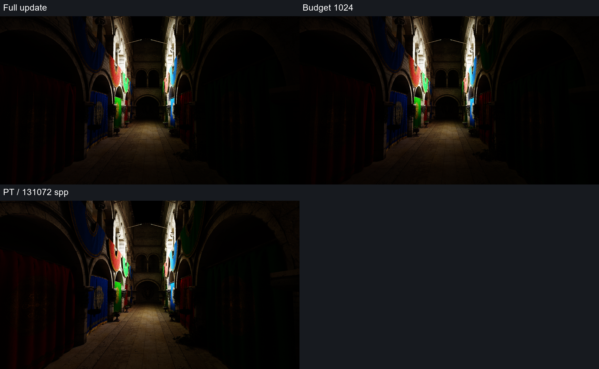
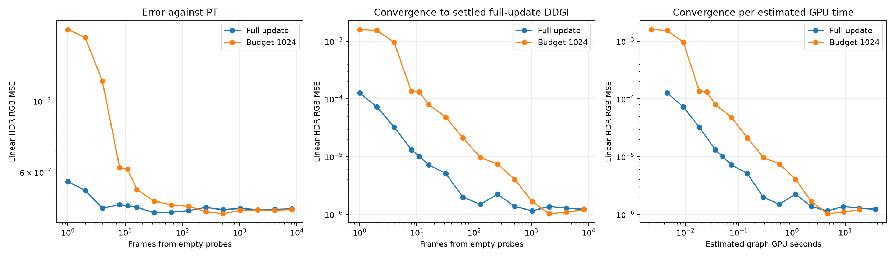

1920×1080，SponzaLambert，固定相机，点光源开启、方向光关闭。原生 DDGI 直接插值 probe；FG、WRC、ReSTIR、NRD、RTXDI 均关闭。仅改变探针更新调度，探针 22³，每个活跃探针 256 条射线，历史权重 0.97。
全量每帧更新 10648 个；预算模式每轮 10×1024＋408，11 帧覆盖一轮，平均 968 个/帧。非活跃探针在被选中时只发 32 条分类/重定位射线。两组均从空历史启动；8192 帧后用 Accumulate 累积 1024 帧作最终画质图。曲线使用未作画面累积的瞬时结果，防止启动期暗帧污染对收敛速度的判断。初始化历史权重按完整更新轮数，而非呈现帧数计算。
参考复用同一场景/相机/灯光的 131072 spp 未降噪 PT。MSE 在可见表面 mask 内计算线性 HDR RGB；HDR-FLIP 使用共同曝光范围、ACES、PPD 67。展示图统一曝光。GPU 耗时为稳定期 550 帧均值，包含完整 11 帧轮换；曲线第三图以帧数乘稳定期 GPU 均值估算，非实际墙钟时间。
| 方案 | 活跃探针 | MSE ↓ | HDR-FLIP ↓ | ProbeUpdate ms | 渲染图 ms |
|---|---|---|---|---|---|
| 全量更新 | 4330 | 0.000457634 | 0.575244 | 2.592 | 4.515 |
| 每帧最多 1024 | 4330 | 0.000456825 | 0.574800 | 0.358 | 2.272 |
本次结果：分批模式整图 GPU 加速 1.99 倍；稳定后的 MSE 与 HDR-FLIP 接近全量，未改善 DDGI 本身相对 PT 的偏差。以瞬时结果相对稳定全量 DDGI 的 MSE 小于 1e-5 且后续检查点不再超出为判据，全量首次满足于 16 帧，分批为 128 帧。此阈值仅用于本实验比较，不是通用收敛标准。
完整数据与配置：summary.json。该实验只衡量静态收敛；动态光照响应、相机运动与 WRC 质量不在本轮测试范围。


统一 Magma [0,1]：暗为误差小，亮为误差大；深灰背景为 mask 外。
GBufferRT → DDGI〔选取批次 → 紧凑 TraceRays → SDK 辐照度/距离混合 → Relocation → Classification → 全屏直接光与 probe 插值〕→ Accumulate → ToneMapper。SDK 计算阶段保留全网格 dispatch，并在共享内存操作前按批次跳过；追踪 dispatch 仅覆盖本批探针。WRC 路径也应用同一批次，但本轮基准关闭 WRC。